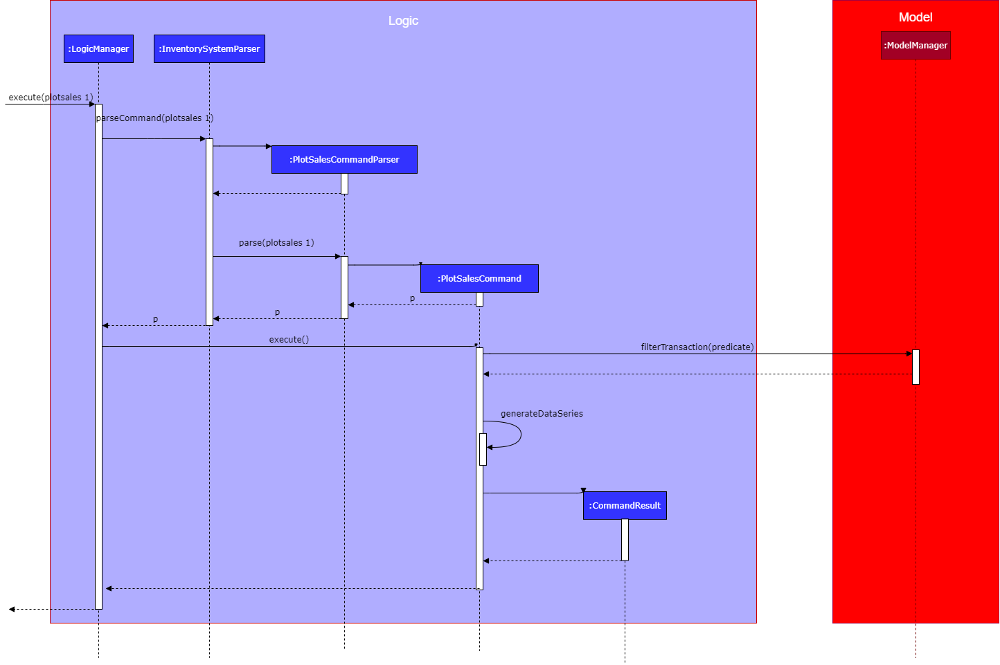
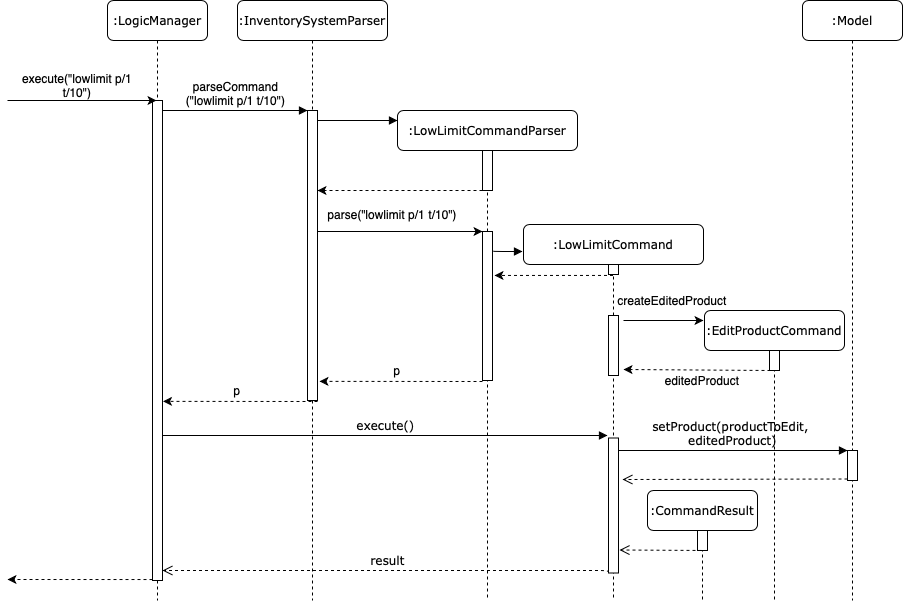
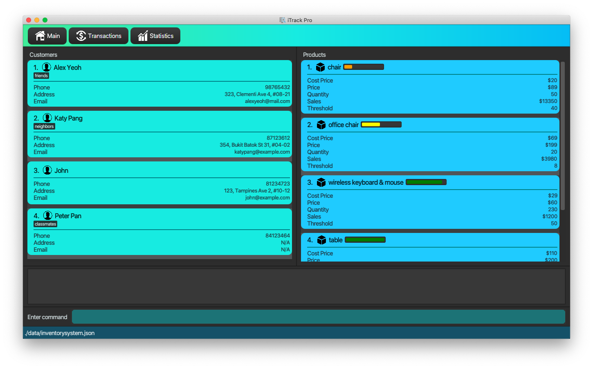

By: iTrackPro Team Since: Feb 2020 Licence: MIT
- 1. Setting up
- 2. Design
- 3. Implementation
- 3.1. Add/delete/edit/clear/list/find customer/product feature
- 3.2. Add/edit/undo/list/find transactions
- 3.3. Get revenue/profit feature
- 3.4. Plot the quantity sold of a product
- 3.5. Set low limit threshold to receive notifications for products
- 3.6. Notification window for products
- 3.7. Sort Product List
- 3.8. Logging
- 3.9. Configuration
- 4. Documentation
- 5. Testing
- 6. Dev Ops
- Appendix A: Product Scope
- Appendix B: User Stories
- Appendix C: Use Cases
- Appendix D: Non Functional Requirements
- Appendix E: Glossary
- Appendix F: Instructions for Manual Testing
- Appendix G: Effort
1. Setting up
Refer to the guide here.
2. Design
2.1. Architecture

The Architecture Diagram given above explains the high-level design of the App. Given below is a quick overview of each component.
-
At app launch: Initializes the components in the correct sequence, and connects them up with each other.
-
At shut down: Shuts down the components and invokes cleanup method where necessary.
Commons represents a collection of classes used by multiple other components.
The following class plays an important role at the architecture level:
-
LogsCenter: Used by many classes to write log messages to the App’s log file.
The rest of the App consists of four components.
Each of the four components
-
Defines its API in an
interfacewith the same name as the Component. -
Exposes its functionality using a
{Component Name}Managerclass.
For example, the Logic component (see the class diagram given below) defines it’s API in the Logic.java interface and exposes its functionality using the LogicManager.java class.

How the architecture components interact with each other
The Sequence Diagram below shows how the components interact with each other for the scenario where the user issues the command deletep 1.

deletep 1 commandThe sections below give more details of each component.
2.2. UI component

API : Ui.java
The UI consists of a MainWindow that is made up of parts e.g.CommandBox, ResultDisplay, CustomerListPanel, StatusBarFooter etc. All these, including the MainWindow, inherit from the abstract UiPart class.
The UI component uses JavaFx UI framework. The layout of these UI parts are defined in matching .fxml files that are in the src/main/resources/view folder. For example, the layout of the MainWindow is specified in MainWindow.fxml
The UI component,
-
Executes user commands using the
Logiccomponent. -
Listens for changes to
Modeldata so that the UI can be updated with the modified data.
2.3. Logic component
API :
Logic.java
-
Logicuses theInventorySystemParserclass to parse the user command. -
This results in a
Commandobject which is executed by theLogicManager. -
The command execution can affect the
Model(e.g. adding a customer). -
The result of the command execution is encapsulated as a
CommandResultobject which is passed back to theUi. -
In addition, the
CommandResultobject can also instruct theUito perform certain actions, such as displaying help to the user.
Given below is the Sequence Diagram for interactions within the Logic component for the execute("deletec 1") API call.

deletec 1 Command
The lifeline for DeleteCommandParser should end at the destroy marker (X) but due to a limitation of PlantUML, the lifeline reaches the end of diagram.
|
2.4. Model component
API : Model.java
The Model,
-
stores a
UserPrefobject that represents the user’s preferences. -
stores the Inventory System data.
-
exposes an unmodifiable
ObservableList<Customer>that can be 'observed' e.g. the UI can be bound to this list so that the UI automatically updates when the data in the list change. -
exposes an unmodifiable
ObservableList<Product>that can be 'observed' e.g. the UI can be bound to this list so that the UI automatically updates when the data in the list change. -
exposes an unmodifiable
ObservableList<Transaction>that can be 'observed' e.g. the UI can be bound to this list so that the UI automatically updates when the data in the list change. -
does not depend on any of the other three components.
As a more OOP model, we can store a Tag list in Inventory System, which Customer can reference. This would allow Inventory System to only require one Tag object per unique Tag, instead of each Customer needing their own Tag object. An example of how such a model may look like is given below.
|
2.5. Storage component
API : Storage.java
The Storage component,
-
can save
UserPrefobjects in json format and read it back. -
can save the Inventory System data in json format and read it back.
2.6. Common classes
Classes used by multiple components are in the seedu.addressbook.commons package.
3. Implementation
This section describes some noteworthy details on how certain features are implemented.
3.1. Add/delete/edit/clear/list/find customer/product feature
The manage product mechanism is facilitated by InventorySystemParser.
First, the InventorySystemParser class parses the user command.
This results in a Command object which is executed by the LogicManager.
The command execution modifies Model’s customer list depending on the command.
The result of the command execution is encapsulated as a CommandResult object which is passed back to the Ui.
The following commands are available to be parsed by InventorySystemParser:
-
AddCustomerCommand/AddProductCommand-
Adds the customer/product into the list in the inventory system.
-
-
ListCustomerCommand/ListProductCommand-
Lists all customer/product in the list.
-
-
ClearCustomerCommand/ClearProductCommand-
Clears all customer/product in the list.
-
-
DeleteCustomerCommand/DeleteProductCommand-
Deletes the selected customer/product from the list in the inventory system.
-
-
EditCustomerCommand/EditProductCommand-
Edits the customer/product details.
-
-
FindCustomerCommand/FindProductCommand-
Finds customer/product with attributes containing given keyword(s).
-
The commands all inherit from superclass Command. Only add, delete, edit and find commands require a command parser to parse the arguments entered by the user.
The following sequence diagram shows how the add operation works:
The following sequence diagram shows how the list operation works:

The following sequence diagram shows how the edit operation works:
The following activity diagram summarizes what happens when a user executes a command that changes the customer/product list in the model:
3.1.1. Design Considerations
Aspect: How commands are executed
-
Alternative 1 (current choice): Keep customers/products in the inventory system
-
Pros: Easy to implement, use less memory
-
Cons: If inventory system is corrupted then the data is lost
-
-
Alternative 2: Keep customers/products in individual management systems, separate each of the classes
-
Pros: Keep implementation of products, customers and transactions separate
-
Cons: Use more memory, tedious implementation
-
Aspect: Data structure to support the commands
-
Alternative 1 (current choice): Use a list (
ArrayList) to store the customers/products-
Pros: Easy to sort and iterate through the list, get(index) method always gives an O(1) performance
-
Cons: allows duplicates
-
-
Alternative 2: Use a hashmap to store the customers/products
-
Pros: Find can be done in O(1), does not allow duplicate keys
-
Cons: Difficult to sort and iterate through hashmap, get(key) can be O(1) in the best case and O(n) in the worst case.
-
3.2. Add/edit/undo/list/find transactions
The user input is handled by the MainWindow class in Ui first, then passed to the LogicManager and parsed into
AddTransactionCommand, EditTransactionCommand, etc. Depending on the nature of each command, new transaction or
updated transaction will be added to a new index or existing index of the UniqueTransactionList, hosted by the
InventorySystem class. For the deleteTransactionCommand, a transaction will be dropped from the internalList.
Since the quantity and sales attribute will affect the same attributes of a product, the affiliated product will
also be edited. In the end, the filteredTransactionList of the system will be updated so that the user can view the change
accordingly. For the list and find transction commands, the filteredTransactionList will be updated for the UI to interact with users.
One command is implemented for each operations in the logic module:
-
AddTransactionCommand— Adds a transaction into the system and update the the quantity and sales attribute of the corresponding product. -
EditTransactionCommand— Edit details of a transaction. Ifquantityis changed, edit the affected product as well. -
UndoTransactionCommand— Undo a transaction from the system and edit the affiliated product. -
ListTransactionCommand— List all the transaction in the system. -
FindTransactionCommand— Find certain transactions by keywords.
For each command, a parser is implemented to parse the input into arguments.
-
AddTransactionCommmandParser— Parse the add transaction input and generatesAddTransactionCommand. -
EditTransactionCommandParser— Parse the edit transaction input and generatesEditTransactionCommand. -
UndoTransactionCommandParser--Parse the undo transaction input and generatesUndoTransactionCommand. -
ListTransactionCommandParser--Parse the list transaction input and generatesListTransactionCommand. -
FindTransactionCommandParser--Parse the find transaction input and generatesFindTransactionCommand.
The following sequence diagram shows how each operation works.
AddTransaction Operation:

The AddTransactionCommmandParser returns a transactionFacotry with productIndex and customerIndex, while a
transaction is only generated in AddTransactionCommand.
|
EditTransaction Operation:
Unlike the edit operation of customer and products, editting transaction will trigger another operation of editting its associated product with the new quantity and money. If its product is editted, its quantity will be added back to the original product’s quantity, and the new quantity will be deducted from the quantity of the newly referenced product. The update on sales object will be done in the reverse way. In the end, the new transction and product will replace the old ones in the system.

UndoTransaction Operation:
Undoing a transaction will add back its quantity to teh associated product and remove its amount of money from the sales of that product.

ListTransaction/FindTransaction Operation:
The list operation for transaction is the same as that for products and customers.
3.2.1. Design Considerations
Aspect: How to store product & customer in transaction.
-
Alternative 1 (current choice): Store an unique id and name of the product/ customer.
-
Pros: Do not need to update transaction while product is editted.
-
Cons: More complex when displaying the customer/product information in UI. Needs to query model whenver the system needs to calcualte statistics related with product and transactions.
-
-
Alternative 2 (previous choice): Store the product/ customer instance as an attribute.
-
Pros: Easy to construct a transaction and display product/ customer name.
-
Cons: Easy to generate bugs while any of the instance is editted. Needs to update the product in transaction when a product is editted.
-
Aspect: How to change the quantity & sales attribute of product while editing transactions.
-
Alternative 1 (current choice): If quantity/ product is changed, check validation first, re-store the quantity & sales of the original product, and then and update the quantity & sales of the new product.
-
Pros: Straightforward logic, not likely to create bugs.
-
Cons: Validation checking would be very complex.
-
-
Alternative 2 (previous choice): If quantity/ product is changed, re-store the quantity & sales of the original product, check validation (whether the product has that much inventory as required on transaction), and then and update the quantity & sales of the new product.
-
Pros: Easy to implement.
-
Cons: Likely to generate bugs when the new quantity exceeds inventory, i.e. the edit operation is not valid.
-
3.3. Get revenue/profit feature
The manage product mechanism is facilitated by InventorySystemParser.
First, the InventorySystemParser class parses the user command.
Then the RevenueCommandParser/ProfitCommandParser parses the user input arguments into Command objects.
The resulting RevenueCommand/ProfitCommand is executed by the LogicManager.
The command execution calculates the revenue/profit depending on the command.
The result of the command execution is encapsulated as a CommandResult object which is passed back to the Ui.
The following commands are available to be parsed by InventorySystemParser:
-
RevenueCommand-
Gets the revenue made in a selected period.
-
-
ProfitCommand-
Gets the profit made in a selected period.
-
The commands all inherit from superclass Command and require command parsers to parse the user input arguments.
The following sequence diagram shows how the profit operation works:
The revenue operation works in the same way as the profit operation.
3.3.1. Design Considerations
Aspect: How commands are executed
-
Alternative 1 (current choice): Calculate revenue/profit only when needed
-
Pros: Decreases coupling, easy to test
-
Cons: Need to keep calculating if command is frequently used (increase time complexity especially if transaction list is long)
-
-
Alternative 2: Keep track of revenue/profit in a singleton class
-
Pros: No need to calculate when revenue/profit command is executed (instead, revenue/profit is updated whenever a transaction is added or edited)
-
Cons: Hard to unit test, increase coupling
-
3.4. Plot the quantity sold of a product
The plot sales command is facilitated by InventorySystemParser.
First, the InventorySystemParser class parses the user command.
Then the PlotSalesCommandParser parses the user input arguments into the index of the product,
the start date, and the end date.
The generated PlotSalesCommand is executed by the LogicManager.
The command execution generates a daily time sequence and calcualte the quantity sold on each day by querying all the
related transactions. The time series data and the signal of displaying the sales graph is then encapsulated
as a CommandResult object which is passed back to the Ui.
The following sequnce diagram shos how the plot sale operation works:

3.5. Set low limit threshold to receive notifications for products
The low limit mechanism is facilitated by InventorySystemParser.
First, the InventorySystemParser class parses the user command.
Then the LowLimitCommandParser parses the user input arguments into LowLimitCommand object.
The resulting LowLimitCommand is executed by the LogicManager.
The command execution sets the updated threshold for the chosen product.
The result of the command execution is encapsulated as a CommandResult object which is passed back to the Ui.
The command inherit from superclass Command and require command parser to parse the user input arguments.
The following sequence diagram shows how the low limit operation works:

3.5.1. Design Considerations
Aspect: How the threshold field is being updated.
-
Alternative 1 (current choice): Separate low limit threshold command with edit product command
-
Pros: Decreases coupling, easier to test.
-
Cons: Additional command to edit the field of an product.
-
-
Alternative 2: Integrate with existing edit product command
-
Pros: Will reduce number of commands the user needs to use.
-
Cons: Hard to unit test, increase coupling.
-
3.6. Notification window for products
The notification window appears whenever an product’s quantity reaches the threshold that was set. It comes with information such as the product’s description and remaining quantity left.
The following activity diagram shows how the operation works:

3.6.1. Design Considerations
Aspect: Display of the notification window
-
Alternative 1 (current choice): Only display product’s name and remaining quantity.
-
Pros: User friendly, easy to implement.
-
Cons: Have to find and change the product’s quantity via the command line.
-
-
Alternative 2: Provide quick way to change product’s quantity via GUI
-
Pros: Speeds up the process of stocking up.
-
Cons: Hard to do testing for GUI, and project scope was on command line application.
-
3.7. Sort Product List
The product list sorts by the progress bar indicator beside each product’s description whenever user enters listp command.
An example is shown below:

The following activity diagram shows how the operation works:

3.7.1. Design Considerations
Aspect: When to sort the product list
-
Alternative 1 (current choice): Sorts only when user uses
listpfunction.-
Pros: More intuitive and user friendly.
-
Cons: Might be hard to track products' remaining balance without listing all the products.
-
-
Alternative 2: Sorts whenever the product list is updated.
-
Pros: Easy to track products' remaining balance.
-
Cons: Might be confusing for user as the indexes for product will change as the product list is sorted automatically, resulting in user to recheck products' index before entering in commands.
-
3.8. Logging
We are using java.util.logging package for logging. The LogsCenter class is used to manage the logging levels and logging destinations.
-
The logging level can be controlled using the
logLevelsetting in the configuration file (See Section 3.9, “Configuration”) -
The
Loggerfor a class can be obtained usingLogsCenter.getLogger(Class)which will log messages according to the specified logging level -
Currently log messages are output through:
Consoleand to a.logfile.
Logging Levels
-
SEVERE: Critical problem detected which may possibly cause the termination of the application -
WARNING: Can continue, but with caution -
INFO: Information showing the noteworthy actions by the App -
FINE: Details that is not usually noteworthy but may be useful in debugging e.g. print the actual list instead of just its size
3.9. Configuration
Certain properties of the application can be controlled (e.g user prefs file location, logging level) through the configuration file (default: config.json).
4. Documentation
Refer to the guide here.
5. Testing
Refer to the guide here.
6. Dev Ops
Refer to the guide here.
Appendix A: Product Scope
Target user profile: Shop owners who
-
Are selling products
-
Cannot afford expensive management systems
-
Are relying on manual work to record products
-
Want to optimise sales based analysis of previous sales
-
Have many products and a large inventory
-
-
Prefer desktop apps over other types
-
Can type fast
-
Prefer typing over mouse input
-
Are reasonably comfortable using CLI apps
Value proposition: manage contacts faster than a typical mouse/GUI driven app
Appendix B: User Stories
Priorities: High (must have) - * * *, Medium (nice to have) - * *, Low (unlikely to have) - *
| Priority | As a … | I want to … | So that I can… |
|---|---|---|---|
|
new user |
see usage instructions |
refer to it when I forgot how to use the app |
|
user |
add items to the system |
|
|
user |
delete my items from the system |
|
|
user |
edit my item details in the system |
keep the list updated |
|
user |
view all items in my shop |
keep track of my items |
|
user |
find items by keyword or attributes |
search items more efficiently |
|
user |
receive notifications when the product quantity is running low |
stock up for the particular product |
|
user |
set the inventory quantity low limit |
get notified when my stock is running low |
|
analytical user |
view the top-selling products and worst-selling products at one glance (e.g. dashboard that displays name of products) |
|
|
analytical user |
view the sales or quantity of each individual product in graphical format |
so that it is easier to visualise |
|
analytical user |
see predicted sales for the next month based on past sales |
know which products to stock up on |
|
analytical user |
view a list of products sorted by the amount of profits |
|
|
analytical user |
view the revenue on a daily/ monthly/ yearly basis or in a customised period |
|
|
lazy user |
keep track of previous inputs |
enter/edit previous commands easily |
|
lazy user |
access products that are running low in quantity easily |
restock and update the system much faster |
Appendix C: Use Cases
(For all use cases below, the System is the iTrack Pro and the Actor is the user, unless specified otherwise)
Use case: UC01 - Delete an item
MSS
-
User requests to list items (UC05)
-
The app displays a list of requested items.
-
User requests to delete a specific item in the list
-
The item is deleted from the list
Use case ends.
Extensions
-
2a. The list is empty.
Use case ends.
-
3a. The given index is invalid.
-
3a1. The app shows an error message.
Use case resumes at step 2.
-
Use case: UC02 - Add an item
MSS
-
User adds an item.
-
The app notifies the user that the item is added.
Use case ends.
Extensions
-
1a. The add command is invalid or incomplete.
-
1a1. The app shows an error message.
-
1a2. The app shows an example of valid input for the command.
Use case ends.
-
Use case: UC03 - Edit an item
MSS
-
User requests to list items (UC05)
-
The app displays a list of requested items.
-
User requests to edit a specific item in the list.
-
The item is updated with the new information entered by the user.
Use case ends.
Extensions
-
2a. The list is empty.
Use case ends.
-
3a. The given index is invalid.
-
3a1. The app shows an error message.
Use case resumes at step 2.
-
-
3b. The edit command input is invalid or incomplete.
-
3b1. The app shows an error message.
-
3b2. The app shows an example of valid input for the command.
Use case resumes at step 3.
-
Use case: UC04 - Find items
MSS
-
User requests to find items by keyword and/or attribute.
-
The app displays the search result.
Use case ends.
Extensions
-
1a. No item was found with the keyword and/or attribute entered.
-
1a1. The app shows a prompt message that no such item was found.
Use case ends.
-
-
1b. The find command input is invalid or incomplete.
-
1b1. The app shows an error message.
-
1b2. The app shows an example of valid input for the command.
Use case resumes at step 1.
-
Use case: UC05 - List items
MSS
-
User requests to list items.
-
The app displays a list of requested items.
Use case ends.
Extensions
-
2a. The list is empty.
-
2a1. The app shows a prompt message that the list is empty.
Use case ends.
-
Use case: UC06 - View statistics (profit, revenue)
MSS
-
User requests to view statistics.
-
The app shows all statistics.
Use case ends.
Extensions
-
2a. There are no products, hence no statistics can be shown.
-
2a1. The app shows an error message.
Use case ends.
-
Use case: UC07 - Predict sales
MSS
-
User requests to predict sales for next month.
-
The app shows the predictions.
Use case ends.
Extensions
-
2a. There are no products, hence no predictions can be made.
-
2a1. The app shows an error message.
Use case ends.
-
Use case: UC08 - Configure low inventory notification settings (for products)
MSS
-
User sets the quantity threshold for a particular product.
Use case ends.
Extensions
-
1a. The input limit is invalid or out of range or the product index is invalid.
-
1a1. The app shows an error message.
Use case ends.
-
Use case: UC09 - Plot the quantity sold of a product (for products)
MSS
-
User enters the index of the product as well as the start date and end date for ploting purposes.
Use case ends.
Extensions
-
1a. The index is out of boundary.
-
1a1. The app shows an error message.
Use case ends.
-
Appendix D: Non Functional Requirements
-
Should work on any mainstream OS as long as it has Java 11 or above installed.
-
Should be able to hold up to 1000 customers without a noticeable sluggishness in performance for typical usage.
-
A user with above average typing speed for regular English text (i.e. not code, not system admin commands) should be able to accomplish most of the tasks faster using commands than using the mouse.
-
The system should work on Windows, Linux or Mac operating aystems.
-
The system should be usable by a novice who has never used an inventory management system.
-
The system should save the product, customer and transaction data permanently.
-
There should be at least one product and customer before a transaction can be made.
-
The response to any use action should become visible within 5 seconds.
-
The system should be able to have up to 1000000 customers, 1000000 products and 1000000 transactions.
-
The product (price, cost price, quantity, sales), transaction (quantity, money) fields and quantity threshold should be able to take integers up to 1000000.
-
The price and cost price should be at least $1.
-
The customer’s address field should take up to 45 characters.
-
The customer’s name field should take up to 30 characters.
-
The customer’s phone field should be between 3 to 15 characters long and contain only integers.
-
The customer’s email field should take up to 40 characters and should be a valid email format.
-
A customer can have up to 5 tags where each tag is up to 15 characters long.
-
The user interface should be intuitive enough for users who are not IT-savvy.
-
The source code should be open source.
-
The product is offered as a free downloadable jar file.
Appendix E: Glossary
- Mainstream OS
-
Windows, Linux, Unix, OS-X
- Item
-
Any item belonging to either customer, product or a transaction class
- Customer
-
A customer that buys the user’s shop
- Product
-
An item that is sold in the user’s shop
- Transaction
-
A deal between a customer and the user’s shop that is made on a product
- Inventory
-
The products in stock.
- Revenue
-
The sales of the product, calculated by adding up the transaction amounts of a particular product.
- Profit
-
The money gained from the sale of the product minus cost of product, calculated by revenue - total cost.
- Sales
-
Used interchangeably with revenue
- Price
-
Selling price of the product
- Cost price
-
Price of making/ buying the product to sell
- Jar File
-
A JAR (Java ARchive) is a package file format typically used to aggregate many Java class files and associated metadata and resources (text, images, etc.) into one file for distribution.
Appendix F: Instructions for Manual Testing
Given below are instructions to test the app manually.
| These instructions only provide a starting point for testers to work on; testers are expected to do more exploratory testing. |
F.1. General
F.1.1. Launch and Shutdown
-
Initial launch
-
Download the jar file and copy into an empty folder
-
Double-click the jar file
Expected: Shows the GUI with a set of sample inventory system data. The window size may not be optimum.
-
F.2. Customer
F.2.1. Adding a customer
-
Adding a customer
-
Test case:
addc n/John p/98765432 e/johnd@example.com a/311, Clementi Ave 2, #02-25 t/friends t/owesMoney
Expected: Customer with given attributes is added to list. Details of the added customer shown in the status message. -
Prerequisites: the following command already has been executed once already
Test case:addc n/John p/98765432
Expected: No customer is added as duplicate customers are not allowed. Error details shown in the status message. -
Test case:
addc n/Jane p/98765432 e/jane@example.com a/31 michigan t/friends t/owesMoney t/iphone t/comingThurs t/regular t/giveDiscount
Expected: No customer is added as number of tags should be at most five. Error details shown in the status message. -
Test case:
addc n/Bob n/Eddy p/98765432 e/bob@example.com a/323, Tampines Ave 3, #12-21 t/colleagues
Expected: No customer is added as there are multiple name prefixes. Error details shown in the status message. -
Other incorrect add commands to try:
addc n/Jill,addc n/Jill p/0 e/jill@mail.com a/31 michigan
Expected: Similar to previous.
-
F.2.2. Deleting a customer
-
Deleting a customer while all customers are listed
-
Prerequisites: List all customers using the
listccommand. Multiple customers in the list. -
Test case:
deletec 1
Expected: First customer is deleted from the list. Details of the deleted customer shown in the status message. -
Test case:
deletec 0
Expected: No customer is deleted. Error details shown in the status message. -
Other incorrect delete commands to try:
deletec,deletec x(where x is larger than the list size)
Expected: Similar to previous.
-
F.2.3. Editing a customer
-
Editing a customer while all customers are listed
-
Prerequisites: List all customers using the
listccommand. Multiple customers in the list. -
Test case:
editc 1 n/Bob
Expected: First customer is edited from the list. Details of the edited customer shown in the status message. -
Test case:
editc 1 e/0
Expected: No customers is edited as email is invalid. Error details shown in the status message. -
Test case:
editc 1 n/Johnathan n/Alex
Expected: No customers is edited as there are multiple name prefixes. Error details shown in the status message. -
Other incorrect edit commands to try:
editc 1,editc x(where x is larger than the list size)
Expected: Similar to previous.
-
F.2.4. Clearing all customers
-
Clearing all customers
-
Test case:
clearc
Expected: All customers are cleared. Details of success message is shown in the status bar.
-
F.2.5. Listing all customers
-
Listing all customers
-
Test case:
listc
Expected: All customers are listed. Details of success message is shown in the status bar.
-
F.2.6. Finding customers
-
Finding customers
-
Test case:
findc n/alice
Expected: All customers with full word 'alice' in name are listed. Details of success message is shown in the status bar. -
Test case:
findc n/alex alice
Expected: All customers with full word 'alex' OR 'alice' in name are listed. Details of success message is shown in the status bar. -
Test case:
findc a/serangoon yishun
Expected: All customers with full words matching 'serangoon' OR 'yishun' in their addresses are listed. Details of success message is shown in the status bar. -
Test case:
findc a/serangoon n/bob
Expected: All customers with full words matching 'serangoon' in their addresses AND 'bob' in their names are listed. Details of success is shown in the status bar. -
Test case:
findc n/alex n/peter
Expected: No customers found as there are multiple name prefixes. Error details shown in the status message.
-
F.3. Product
F.3.1. Adding a product
-
Adding a product
-
Test case:
addp d/iphone cp/400 pr/1000 q/10 s/100
Expected: Product with given attributes is added to list. Details of the added product shown in the status message. -
Prerequisites: the following command already has been executed once already
Test case:addp d/iphone cp/400 pr/1000 q/10 s/100
Expected: No product is added as duplicate products are not allowed. Error details shown in the status message. -
Test case:
addp d/iphone cp/400.5 pr/1000 q/10
Expected: No product is added as cost price should be an integer. Error details shown in the status message. -
Test case :
addp d/iphone d/ipad cp/400 pr/1000 q/10
Expected: No product is added as there are multiple description prefixes. Error details shown in the status message. -
Other incorrect add commands to try:
addp d/iphone cp/40 pr/1000 q/x(where x is larger than 1000000),addp d/iphone cp/40 q/100000
Expected: Similar to previous.
-
F.3.2. Deleting a product
-
Deleting a product while all products are listed
-
Prerequisites: List all products using the
listpcommand. Multiple products in the list. -
Test case:
deletep 1
Expected: First product is deleted from the list. Details of the deleted product shown in the status message. -
Test case:
deletep 0
Expected: No product is deleted. Error details shown in the status message. -
Other incorrect delete commands to try:
deletep,deletep x(where x is larger than the list size)
Expected: Similar to previous.
-
F.3.3. Editing a product
-
Editing a product while all products are listed
-
Prerequisites: List all products using the
listpcommand. Multiple products in the list. -
Test case:
editp 1 d/Bag
Expected: First product is edited from the list. Details of the edited product shown in the status message. -
Test case:
editp 1 pr/0
Expected: No product is edited as price is invalid. Error details shown in the status message. -
Test case:
editp 1 pr/300 pr/500
Expected: No product is edited as there are multiple price prefixes. Error details shown in the status message. -
Other incorrect edit commands to try:
editp 1,editp x(where x is larger than the list size)
Expected: Similar to previous.
-
F.3.4. Clearing all products
-
Clearing all products
-
Test case:
clearp
Expected: All products are cleared. Details of success is shown in the status bar.
-
F.3.5. Listing all products
-
Listing all products
-
Test case:
listp
Expected: All products are listed. Details of success is shown in the status bar.
-
F.3.6. Finding products
-
Finding products
-
Test case:
findp bag
Expected: All products with full word 'bag' in description are listed. Details of success is shown in the status bar. -
Test case:
findp bag yellow
Expected: All products with full words matching 'bag' or 'yellow' in description are listed. Details of success is shown in the status bar.
-
F.4. Transaction
F.4.1. Adding a transaction
-
Adding a transaction
-
Test case:
addt c/1 p/1 q/1 dt/2020-04-11 11:44 m/30 d/under discount
Expected: Transaction with given attributes is added to list. Details of the added transaction shown in the status message. -
Prerequisites: the following command already has been executed once already
Test case:addt c/1 p/1 q/1 dt/2020-04-11 10:44 m/30 d/under discount
Expected: No transaction is added as duplicate transactions are not allowed. Error details shown in the status message. -
Test case:
addt c/1 p/1 q/0
Expected: No transaction is added as quantity should be a positive integer. Error details shown in the status message. -
Test case:
addt c/1 c/1 p/1 q/10
Expected: No transaction is added as there are multiple customer prefixes. Error details shown in the status message. -
Other incorrect add commands to try:
addt c/x p/1 q/2(where x is larger than size of customer list),addt c/1 p/1
Expected: Similar to previous.
-
F.4.2. Undoing a transaction
-
Undoing a transaction while all transactions are listed
-
Prerequisites: List all transactions using the
listtcommand. Multiple transactions in the list. -
Test case:
undot 1
Expected: First transaction in the list is undone. Details of the undone transaction shown in the status message. -
Test case:
undot 0
Expected: No transaction is deleted. Error details shown in the status message. -
Other incorrect undo commands to try:
undot,undot x(where x is larger than the list size)
Expected: Similar to previous.
-
F.4.3. Editing a transaction
-
Editing a transaction while all transactions are listed
-
Prerequisites: List all transactions using the
listtcommand. Multiple transactions in the list. -
Test case:
editt 1 d/Discount
Expected: First transaction is edited from the list. Details of the edited transaction shown in the status message. -
Test case:
editt 1 m/0
Expected: No transaction is edited as amount is invalid. Error details shown in the status message. -
Test case:
editt 1 d/Discount d/offer
Expected: No transaction is edited as there are multiple description prefixes. Error details shown in the status message. -
Other incorrect edit commands to try:
editt 1,editt x(where x is larger than the list size)
Expected: Similar to previous.
-
F.4.4. Clearing all transactions
-
Clearing all transactions
-
Test case:
cleart
Expected: All transactions are cleared. Details of success is shown in the status bar.
-
F.4.5. Listing all transactions
-
Listing all transactions
-
Test case:
listt
Expected: All transactions are listed. Details of success is shown in the status bar.
-
F.4.6. Finding transactions
-
Finding transactions
-
Test case:
findt c/alice
Expected: All transactions with full word 'alice' in their customer names are listed. Details of success is shown in the status bar. -
Test case:
findt p/bag watch
Expected: All transactions with full words matching 'bag' OR 'watch' in their product names are listed. Details of success is shown in the status bar. -
Test case:
findt c/alice m/10
Expected: All transactions with full words matching 'alice' in their customer names AND have transaction amounts of 10 are listed. Details of success is shown in the status bar. -
Test case:
findt c/alice c/john
Expected: No transaction found as there are multiple customer prefixes. Error details shown in the status message.
-
F.5. Statistics
F.5.1. Getting the revenue made in a certain period
-
Getting the revenue made in a certain period
-
Prerequisites: There is at least one product present.
-
Test case:
revenue sd/2020-01-01 10:00 ed/2020-12-12 10:01
Expected: The calculated revenue is shown in the status message. -
Test case:
revenue sd/2020-09-01 10:00 ed/2020-01-12 10:01
Expected: Revenue cannot be calculated if start date is after end date. Error details shown in the status message. -
Other incorrect revenue commands to try:
revenue sd/2020-01-01 10:00 ed/2020-01-12,revenue
Expected: Similar to previous.
-
F.5.2. Getting the profit made in a certain period
-
Getting the profit made in a certain period
-
Prerequisites: There is at least one product present.
-
Test case:
profit sd/2020-01-01 10:00 ed/2020-12-12 10:01
Expected: The calculated profit is shown in the status message. -
Test case:
profit sd/2020-09-01 10:00 ed/2020-01-12 10:01
Expected: Profit cannot be calculated if start date is after end date. Error details shown in the status message. -
Other incorrect profit commands to try:
profit sd/2020-01-01 10:00 ed/2020-01-12,profit
Expected: Similar to previous.
-
F.5.3. Setting the low-inventory threshold
-
Setting the low-inventory threshold
-
Prerequisites: There is at least one product present.
-
Test case:
lowlimit p/1 t/20
Expected: The calculated profit is shown in the status message. -
Test case:
lowlimit p/1 t/0
Expected: Current threshold of product is not modified as threshold can only take positive integer values. Error details shown in the status message. -
Other incorrect lowlimit commands to try:
lowlimit p/x t/20(where x is more than product list size),lowlimit
Expected: Similar to previous.
-
F.5.4. Predicting the sales for the next month
-
Predicting the sales for the next month
-
Prerequisites: There is at least one product present.
-
Test case:
predict
Expected: The predicted revenue for next month is shown in the status message.
-
F.5.5. Plotting sales of a product
-
Plotting sales of a product
-
Prerequisites: List all products using the
listpcommand. Multiple products in the list. -
Test case:
plotsales 1 sd/2020-03-20 10:00 ed/2020-03-30 10:00
Expected: The sales of the product is plotted in a graph in a new window that pops up. -
Test case:
plotsales 1 sd/2020-03-20 10:00 ed/2020-01-30 10:00
Expected: Sales of product is not plotted as start date is after end date. Error details shown in the status message. -
Other incorrect plotsales commands to try:
plotsales x sd/2020-03-20 10:00 ed/2020-03-30 10:00(where x is more than product list size),plotsales
Expected: Similar to previous.
-
Appendix G: Effort
Throughout this journey, we have overcame many challenges and gained much more experience in software engineering. Our project was ambitious as it consisted of multiple entities. In addition to the original address book with the persons entity, we also included products and transactions to the system. Since the structure was quite complex, we had to brainstorm about the best way to incorporate products and transactions into the app.
The person class had to be refactored to fit our user profile of customers. The commands for products were similar to the original commands for person, however there were also some differences since the requirements for products and persons varied. For example, the attributes required for products were vastly different for customers, and new restrictions needed to be applied. The commands for transactions were quite different from both customers and products, since transaction is an association class between customer and product. For example, the add transaction command affected the product quantity and sales, so it had to update the product too, whereas for customer and product there was no need to modify other classes. We also needed to consider the proper way to keep track of customers and products to ensure that there were no duplicates. Initially we tried keeping track using only the attributes however there were bugs so we added customer and product ids.
With multiple entities, a lot of thought went into figuring out how to display all the data. Throughout the process, we revamped the ui such that all the information would be presented clearly. Ultimately, our design differed from the original as we settled on a tab design. Initially, there were different windows showing different information too. In the end, we combined most of the information into a single window, and split the information shown according to categories which were listed as tabs. Besides the layout of the ui, the design also took time to finalise as we wanted to make our app look professional and modern.
Lastly, the statistics were quite challenging to implement. This is especially so as we used various bars and graphs, which were new to us and we had to learn independently. The calculations were relatively easier as it was just simple math calculations of profit etc.
In all, even though our project was complex, we managed to implement most of our features and even included extra features that we had not plan on intially. Given the moderate to high difficulty level of the project, we are glad that we achieved our project goals.